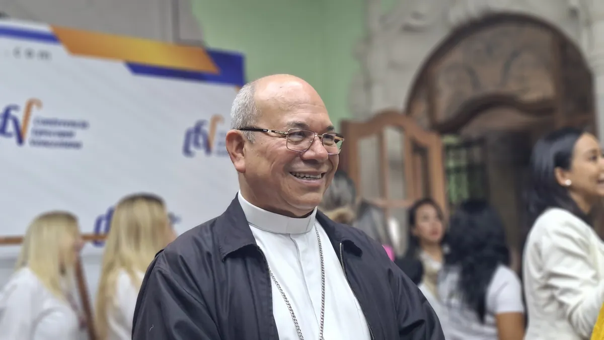
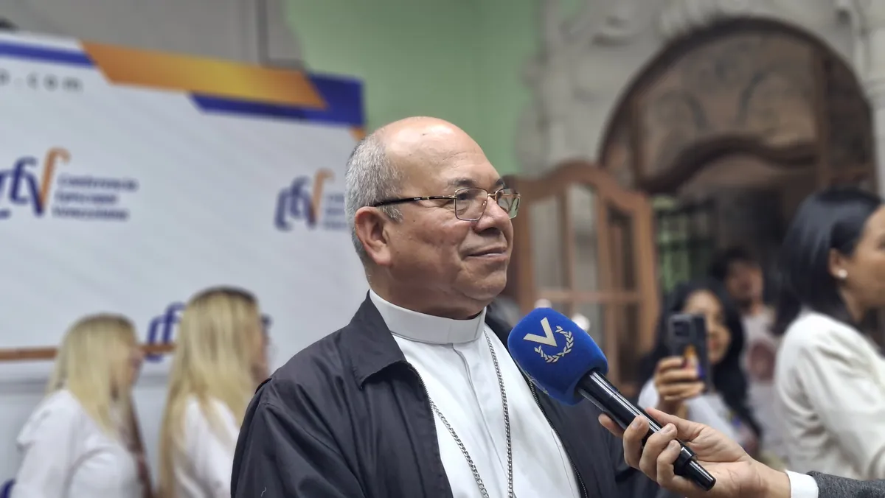
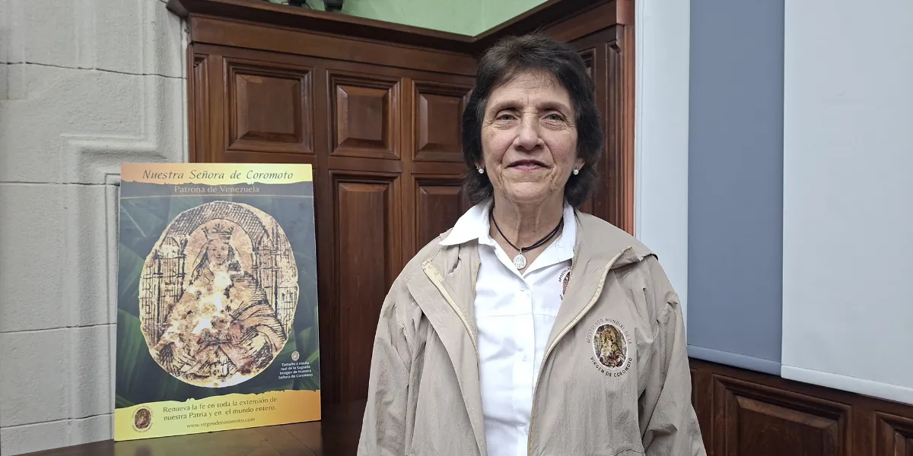
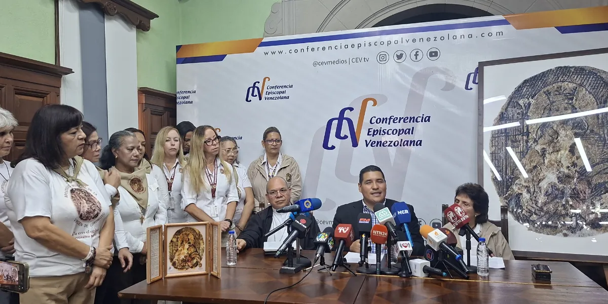
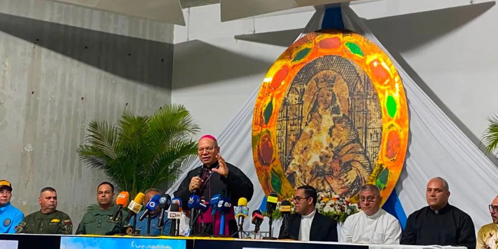
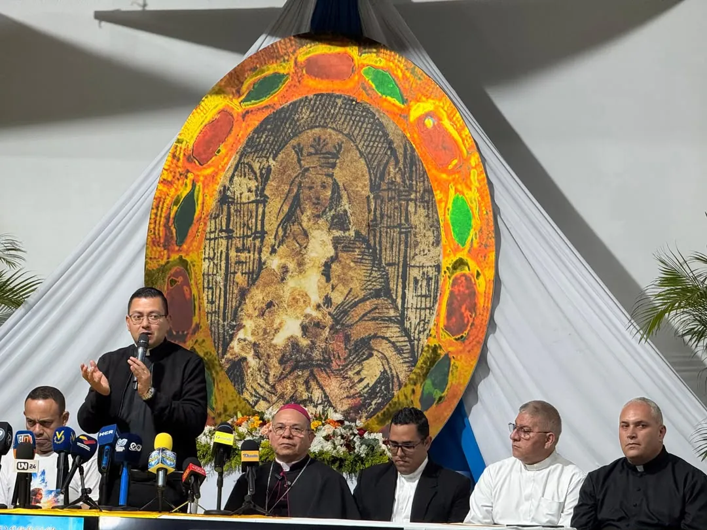
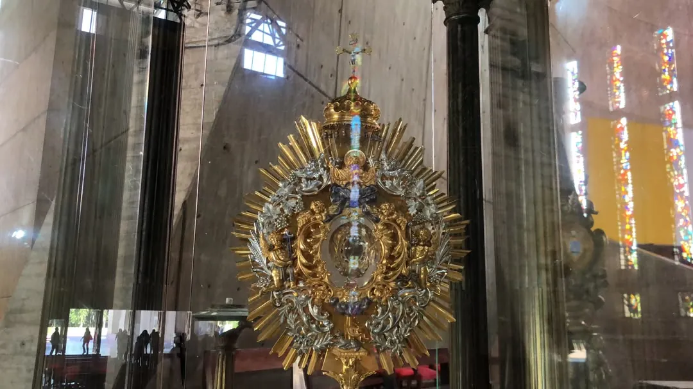
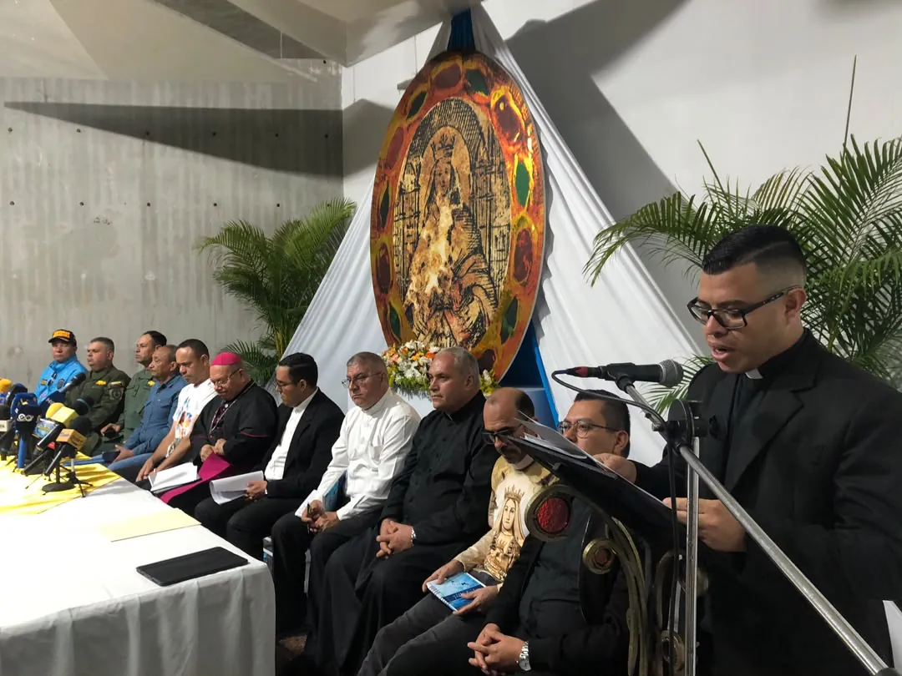
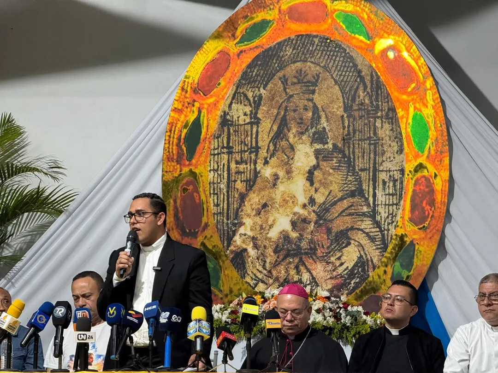

Año Jubilar Coromotano
Año de gracia convocado por la Diócesis de Guanare, con indulgencia plenaria en los templos jubilares, entre septiembre de 2026 y septiembre de 2027. Es un evento diocesano, no una actividad del Centro.
Evento de la Diócesis de Guanare, no organizado por el Centro.

Datos del evento
- Fecha
- Del 8 de septiembre de 2026 al 8 de septiembre de 2027
- Hora
- Misa Solemne de inicio, 10:00 a. m. (hora de Venezuela), según la CEV.
- Modalidad y lugar
- Presencial · Basílica Santuario Nacional de Nuestra Señora de Coromoto, Guanare, y templos jubilares del país
- Organiza
- Diócesis de Guanare
- Estado
- En curso
Información disponible
Inició el martes 8 de septiembre de 2026 con Misa Solemne a las 10:00 a. m. en la Basílica Santuario Nacional de Coromoto, presidida por el arzobispo de Barquisimeto, según la nota de la CEV del 10 de agosto de 2026.
La CEV habla de un año entre septiembre de 2026 y septiembre de 2027. EWTN Noticias da como cierre el 8 de septiembre de 2027.
La indulgencia plenaria se puede ganar en los templos jubilares de Guanare, en las parroquias que llevan el nombre de Coromoto y donde esté la reliquia.
Por los terremotos de junio, el obispo de Guanare pidió que las actividades sean espirituales, litúrgicas, penitenciales y caritativas, y que los festejos culturales se difieran.
El Centro no anunció actividades propias en este jubileo. En la Asamblea Nacional de Pastoral Familiar rezó una oración mariana con el Apostolado Mundial de la Virgen de Coromoto, por el Año Coromotano, y el Área de Familia acordó acompañar a la Diócesis de Guanare en su estructura pastoral.
Galería

Año Jubilar Coromotano, Basílica Santuario Nacional de Nuestra Señora de Coromoto, Guanare, y templos jubilares del país, del 8 de septiembre de 2026 al 8 de septiembre de 2027. Un obispo sonríe durante una entrevista de prensa sobre el Año Jubilar. Crédito: CEV Medios, fuente: Diócesis de Guanare. 
Año Jubilar Coromotano, Basílica Santuario Nacional de Nuestra Señora de Coromoto, Guanare, y templos jubilares del país, del 8 de septiembre de 2026 al 8 de septiembre de 2027. Un obispo responde a un micrófono de televisión sobre el Año Jubilar. Crédito: CEV Medios, fuente: Diócesis de Guanare. 
Año Jubilar Coromotano, Basílica Santuario Nacional de Nuestra Señora de Coromoto, Guanare, y templos jubilares del país, del 8 de septiembre de 2026 al 8 de septiembre de 2027. Una mujer posa junto a un cartel impreso durante la presentación del Año Jubilar Coromotano. Crédito: CEV Medios, fuente: Diócesis de Guanare. 
Año Jubilar Coromotano, Basílica Santuario Nacional de Nuestra Señora de Coromoto, Guanare, y templos jubilares del país, del 8 de septiembre de 2026 al 8 de septiembre de 2027. Mesa de la rueda de prensa con voceros y público de pie, con la imagen de la Virgen de Coromoto. Crédito: CEV Medios, fuente: Diócesis de Guanare. 
Año Jubilar Coromotano, Basílica Santuario Nacional de Nuestra Señora de Coromoto, Guanare, y templos jubilares del país, del 8 de septiembre de 2026 al 8 de septiembre de 2027. Rueda de prensa en el Santuario de Coromoto con el obispo de Guanare y autoridades, ante una imagen de la Virgen. Crédito: CEV Medios, fuente: Diócesis de Guanare. 
Año Jubilar Coromotano, Basílica Santuario Nacional de Nuestra Señora de Coromoto, Guanare, y templos jubilares del país, del 8 de septiembre de 2026 al 8 de septiembre de 2027. Mesa de voceros en el Santuario de Coromoto con un sacerdote que habla al micrófono. Crédito: CEV Medios, fuente: Diócesis de Guanare. 
Año Jubilar Coromotano, Basílica Santuario Nacional de Nuestra Señora de Coromoto, Guanare, y templos jubilares del país, del 8 de septiembre de 2026 al 8 de septiembre de 2027. Custodia dorada en el Santuario de Coromoto. Crédito: CEV Medios, fuente: Diócesis de Guanare. 
Año Jubilar Coromotano, Basílica Santuario Nacional de Nuestra Señora de Coromoto, Guanare, y templos jubilares del país, del 8 de septiembre de 2026 al 8 de septiembre de 2027. Voceros diocesanos durante la rueda de prensa del cronograma jubilar. Crédito: CEV Medios, fuente: Diócesis de Guanare. 
Año Jubilar Coromotano, Basílica Santuario Nacional de Nuestra Señora de Coromoto, Guanare, y templos jubilares del país, del 8 de septiembre de 2026 al 8 de septiembre de 2027. Un sacerdote habla ante la imagen de la Virgen en la rueda de prensa del cronograma jubilar. Crédito: CEV Medios, fuente: Diócesis de Guanare.